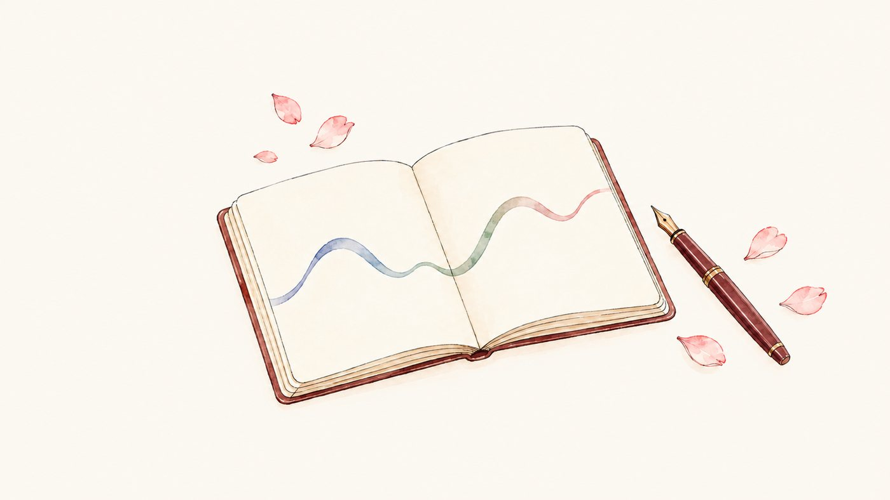
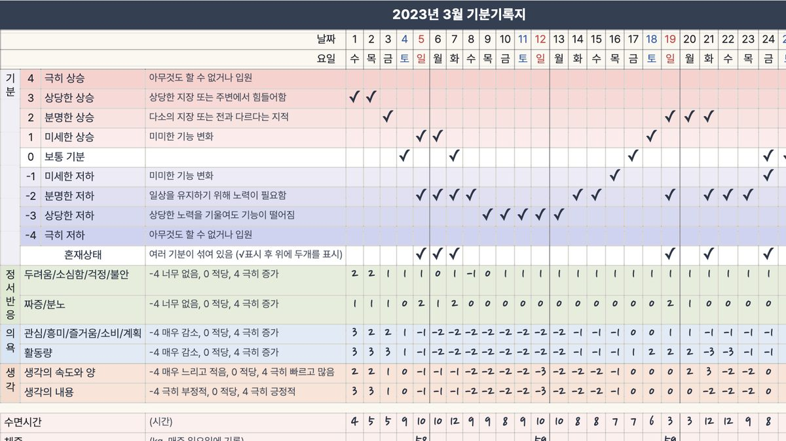

분당서울대학교병원
기분장애클리닉
안녕하세요? 분당서울대학교병원 기분장애클리닉에 오신 것을 환영합니다. 이 자료는 기분장애클리닉에 방문하신 분들의 진료를 돕고, 기분장애에 대한 정보를 제공하기 위해 만들어졌습니다.
설문·자가평가
아래 설문지를 작성해보세요. 클리닉에 방문한 많은 분들이 이 설문검사에 참여하셨습니다. 여러분도 설문검사에 참여하시면 다른 분들과 비교해서 스스로의 증상과 성격이 어떠한지 알 수 있게 됩니다. 설문지 검사에는 어떤 비용도 추가되지 않습니다.
회원가입 시 진료실에서 받으신 명함에 적혀 있는 번호를 입력하세요. 아래 설문과 평가는 모두 회원가입 후 로그인해야 이용할 수 있습니다.
생활습관 점수표
지난 한 달 간의 생활습관을 체크해보세요. 수면, 활동, 식사, 음주 등 기분에 영향을 주는 습관을 점검합니다.
기분안정성평가 설문지
증상이 나아지고 있는지 주기적으로 체크해보세요.
기분기록지와 기분장애 가이드북
기분장애를 극복하기 위해서는 기분장애라는 병에 대해서 잘 알고, 스스로의 기분을 잘 관찰하는 것이 중요합니다.
기분기록지는 휴대폰, 태블릿, PC에서 바로 쓸 수 있습니다. 아래 링크를 즐겨찾기(홈 화면에 추가)해 두고 매일 기록해보세요. 익명으로 가입할 수 있습니다.
기분장애 가이드북 영상
가이드북의 내용을 10편의 짧은 영상으로 설명합니다. (편마다 4–6분, 한국어 자막)
먼저 읽어보세요

기분장애 가이드북 기분장애란 어떤 병인지, 증상과 경과, 원인, 치료의 종류, 일주기 리듬과 생활 습관까지 차례대로 설명합니다. 읽기 →
기분기록지 작성방법 기분, 정서 반응, 의욕과 생각, 수면·체중·음주, 생활사건을 어떻게 기록하는지 예시와 함께 안내합니다. 읽기 →작성방법 설명 동영상
기분기록지의 항목 하나하나를 예시와 함께 설명합니다. (11분, 한국어 자막)
종이 기록지(인쇄용 PDF)
프린트해서 쓰거나 태블릿에서 필기할 수 있는 PDF입니다. Google Drive 미리보기로 열리며, 화면 오른쪽 위의 다운로드 버튼으로 저장할 수 있습니다.
호흡·이완·마음챙김
호흡 훈련
간단한 기법이지만 불안, 공황, 충동을 조절하는 데 큰 도움이 될 수 있습니다. 평소 연습하지 않으면 공황발작이 올 때 하기 어렵습니다. 아래 링크를 즐겨찾기 해두고 틈틈이 하루 10번 이상 연습해보세요.
복식호흡·근육이완 동영상
국립정신건강센터에서 제공하는 복식호흡훈련 및 근육이완훈련 동영상입니다.
마음챙김
기분을 조절하는 데 있어서 '마음챙김' 치료는 큰 도움이 될 수 있습니다. 마음챙김에 대한 소개를 들어보고 기초 코스도 따라해보세요.
자료·연구성과
워크북
『조울병의 변증법적 행동치료 워크북』은 기분장애를 극복하는 데 도움이 되는 기법들을 모아둔 책입니다. 직접 읽으면서 따라해볼 수 있습니다.
연구 성과
분당서울대학교병원 기분장애팀의 연구 성과를 확인해보세요.